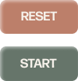

x
Welcome to PomoFocus
PomoFocus uses the Pomodoro Technique which helps with completing tasks and work in intervals. Before using this web app, make sure to plan out your tasks.
To begin PomoFocus, click the ‘Pomodoro’ button to start the timer of 25 minutes. Then, click the ‘Short Break’ button and go on a 5 minute break/rest. Repeat this 4 times and then reward yourself with a longer break of 20 minutes by clicking the ‘Long Break’ button.

Use the ‘Start’ button to begin the timers and click ‘Pause’ to stop the timer at any time. You may also click ‘Reset’ to set which timer you'd like from the beginning. Enjoy using PomoFocus!